The problem: no benchmark, and the experts are somewhere else
Weill's team builds AI for Air Canada's business units. The tasks are specific enough that there is no public benchmark to lean on. The second half of the problem is worse. His team is not the domain expert; the experts sit in other units, work in their own systems, and have little time to give. His slide puts the question behind every one of their agents this way: how do you test an agent when you are not the expert, and the experts have no time?
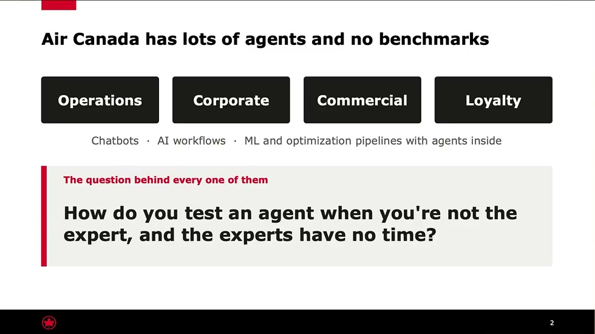
“We don't have any particular benchmark we can rely on”00:00:00
- The tasks are too specific for any existing benchmark.
- The people who could grade the answers are not on the team.
- Without one or the other, there is no conventional way to evaluate.
Evidence: transcript 00:00:00
What didn't work in 2024: more parts, and a weekly expert
He had met the problem before, at a telecom company in 2024: a question-answering system for engineers over about ten thousand standards and vendor documents. Four teams got the same documents and the same task. His slide says three of them didn't work, and that he still doesn't know why; he only knows what his own team did.
What his team did at first also failed. They kept adding to the retrieval pipeline, one technique a week. The slide lists them: better parsing, a re-ranker, a query rewriter, a chunker, HyPE, extra reasoning steps. Each looked good on paper, and each fix broke something that used to work. The slide's quality line stays flat for eight weeks.
The only way to know whether a change helped was a weekly meeting with the experts. They put five chatbots on a big screen, asked each the same question, and had the experts say which answer was better. The experts did not always agree, and sometimes had to go and look the answer up. That set the pace: one try a week.
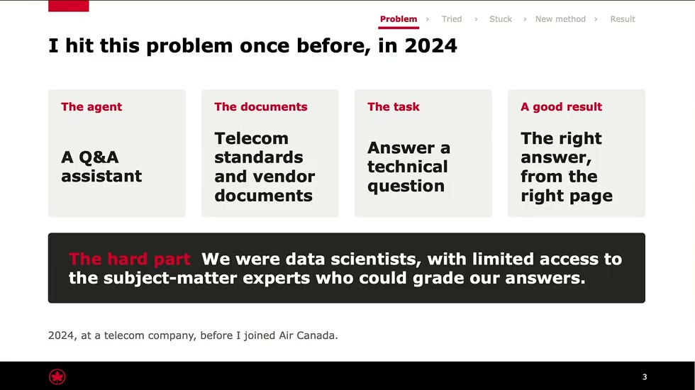
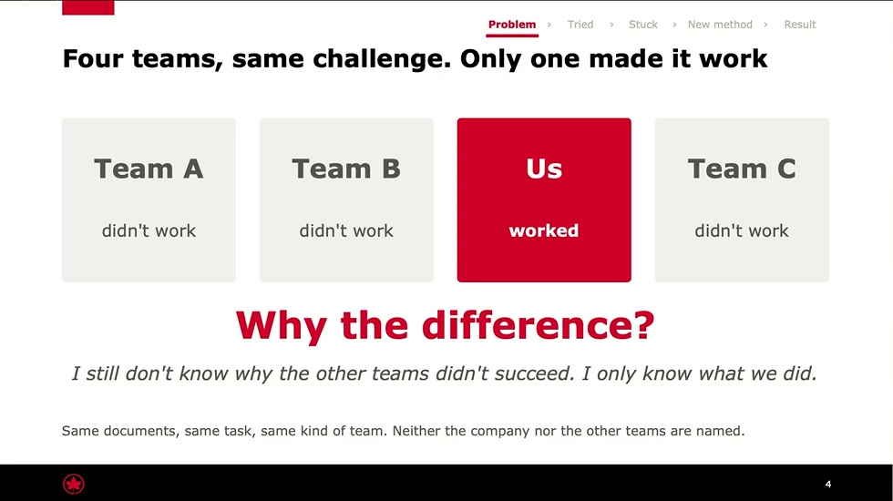
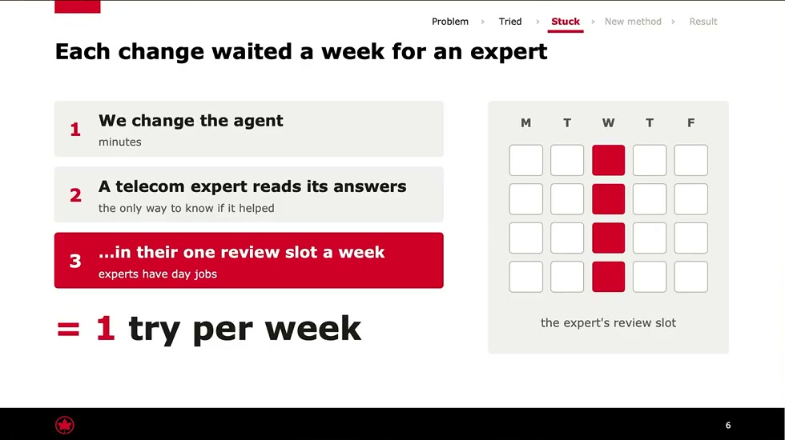
“So our budget was we can try one solution a week.”00:00:00
- Three of four teams on the same task failed.
- Adding retrieval techniques weekly moved nothing and broke things.
- Expert review allowed one experiment a week, and the experts disagreed.
Evidence: transcript 00:00:00
What worked: pick the page, then write the question
The fix reverses the order. Start with a page of the documents. Ask an LLM to write a question that page answers. Give the agent the question and check, in code, whether it retrieves that page. Nobody's opinion is involved, so the whole thing can be automated. He notes this is a known technique, not his invention.
They went from one iteration a week to one a business day by his account on stage; the slide says dozens of tries a day. Every change got a score, kept if the score rose and dropped if it fell. The experts' ratings went up, and the pipeline got simpler, because much of the added complexity turned out not to be needed.
His slide answers the four-teams question with what he calls an axiom: the other three had no test set, and if you can't tell whether a change helped, you can't make the agent better.
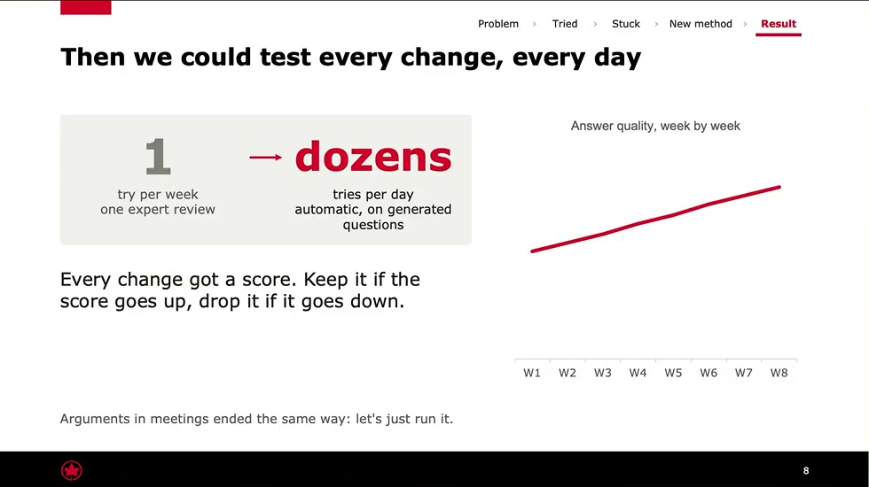
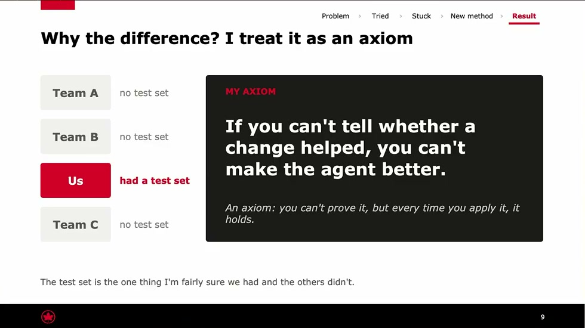
“we went from one iteration week to business day”00:00:00
- Choose the answer first; generate the question from it.
- The check becomes code, so it runs in seconds without an expert.
- A score on every change also let them remove complexity.
Evidence: transcript 00:00:00, 00:06:29 · watch him explain the trick
The fix that didn't carry over
In 2026 at Air Canada the task was different: review supplier contracts clause by clause and say which need changing. It is slow, expensive work, and a missed clause is costly too. There was again no benchmark and the experts were again busy.
The agent has four steps: spot the clause with a problem, find the documents that support a change, write the amendment, and decide whether to flag it. The 2024 test only covers one of them. They already knew how to test finding, from the earlier project. The slide is blunt about the rest: the search test says nothing about spotting, writing or deciding, and re-applying it kept them on the flat line.
So the idea had to be reapplied step by step: get the answer first, then test the agent from the back.
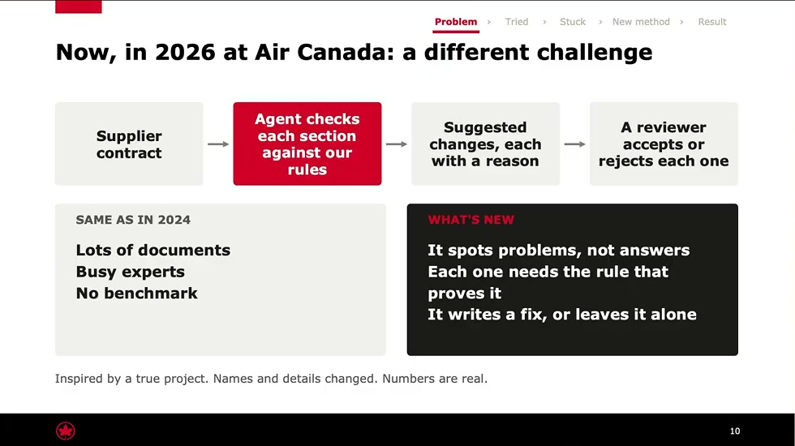
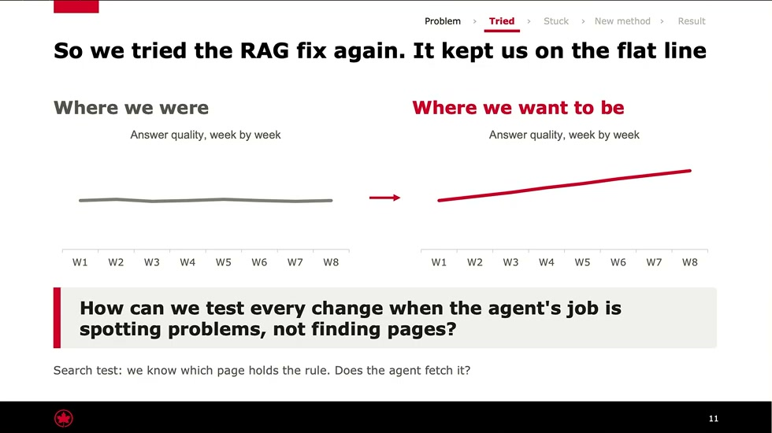
“So we're using the same concept of getting the answer first”00:06:29
- A contract-review agent spots, finds, writes and decides.
- The page-retrieval test covers only "find".
- Each job needs its own way of knowing the answer in advance.
Evidence: transcript 00:06:29
Five ways to get an answer, and what each one found
He presents five techniques and is explicit that the aim is to give the audience ideas, not to show off. What each found comes from the slides.
1. Use past decisions as the answers. Take a contract as received and as signed, diff them, and expect the agent to propose the same changes. It failed for a mundane reason: the team does not keep the original versions. The slide: "we asked for these pairs. None arrived."
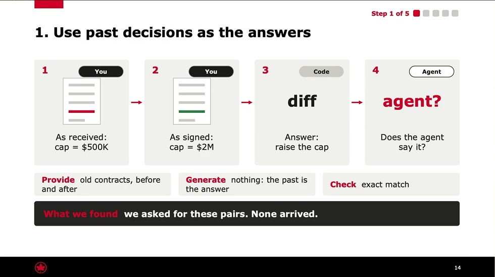
2. Choose the answer, then write the contract. Start from a rule, such as a liability cap of at least $1 million, write a clause that breaks it, and generate a contract around that clause. They could not get full coverage of the rules from experts or documentation, so they wrote some of their own. The slide: 43 rules became 275 answers, known before any test ran.
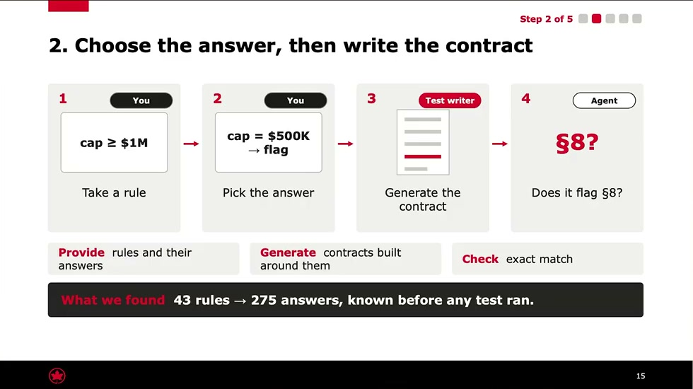
3. Take a good contract and break it. Delete a clause from a signed contract, mix the broken copies with clean ones, and see whether the agent notices what is missing. He calls this a very hard task for the agent. The slide: deleted sections were noticed 1 time in 3.
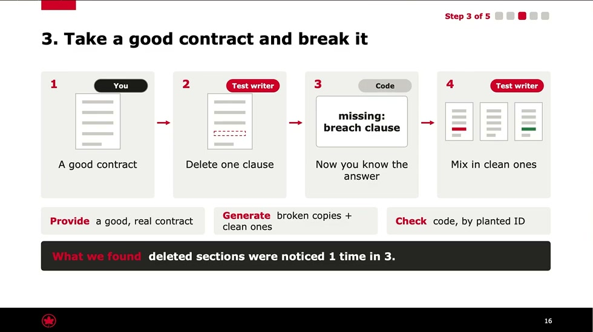
4. Check how the answer moves. When there is no right answer, change something that should not matter, such as the supplier's name or address, and check that the output does not change. The slide: the same contract, run 5 times, changed 1 in 3 judgments.
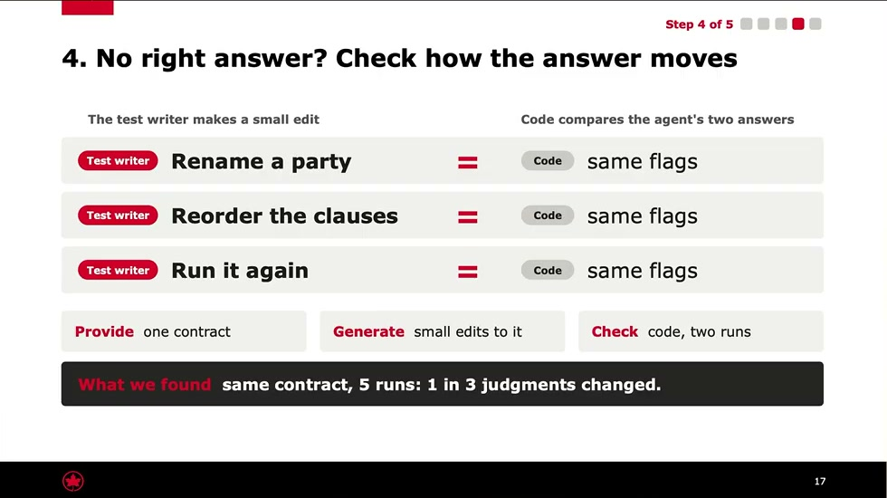
5. Turn one example into many. The experts already work from templates with blanks. Fill each blank with a range of values, some that break a rule and some that don't, and the expected flags are known. He says an evaluation comes back in five minutes.
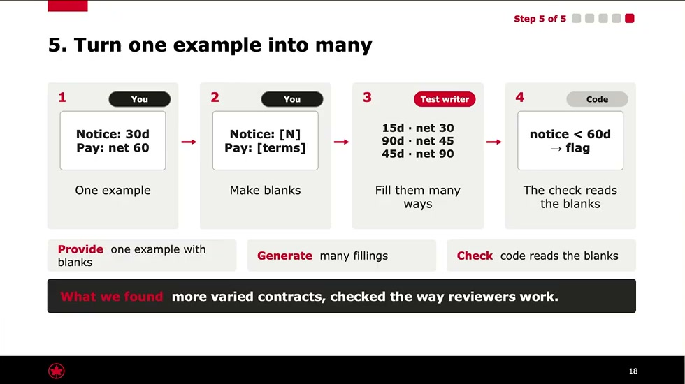
Which of these he considers the strongest is not clear from the recording: he says it of the fifth when he lists them, and of the third when he describes it.
“So we could not have any of those pairs of contracts. So this thing doesn't work.”00:06:29
- One technique produced nothing because the data did not exist.
- Two of them work as tests and expose a weak agent: missed deletions, unstable judgments.
- All five end in a check that code can run.
Evidence: transcript 00:06:29, 00:12:35 · watch the five techniques
Keep the check in code, and treat generated tests as a start
Everything above is checked by code, and that is deliberate. As soon as they brought in an LLM as judge, the noise from the judge was larger than the differences between the agents they were comparing, and finding the right setup for the judge was nearly as hard as the original problem. The slide orders the checks cheapest first, exact match, then code, then an AI judge, then a human, and says no AI judge was needed for any of the five. Its headline number: feedback that took four weeks from a beta now takes five minutes from a scripted run.
The pattern is not specific to contracts. For any agent: know what answer you are looking for, generate the input, run it. His slide gives two more cases, tool-call trajectories and text-to-SQL. It does not fit everything, and sometimes they changed the design of the solution so that it could be evaluated.
Generated tests are where you begin. Real feedback then goes into writing better tests. The closing slide says a person still checks every change, and sets homework: pick one agent, write ten answers before you write the tests, and run them tomorrow.
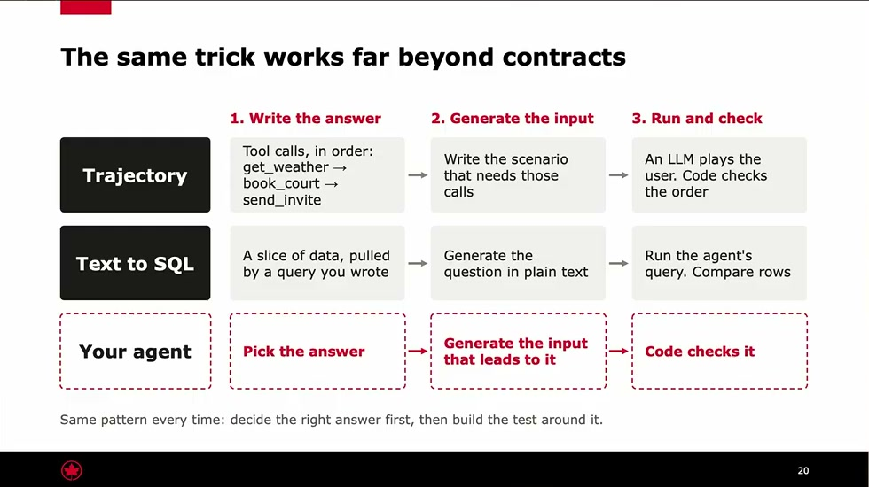
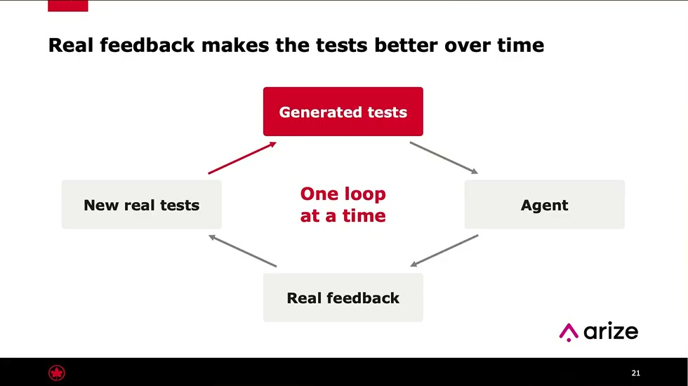
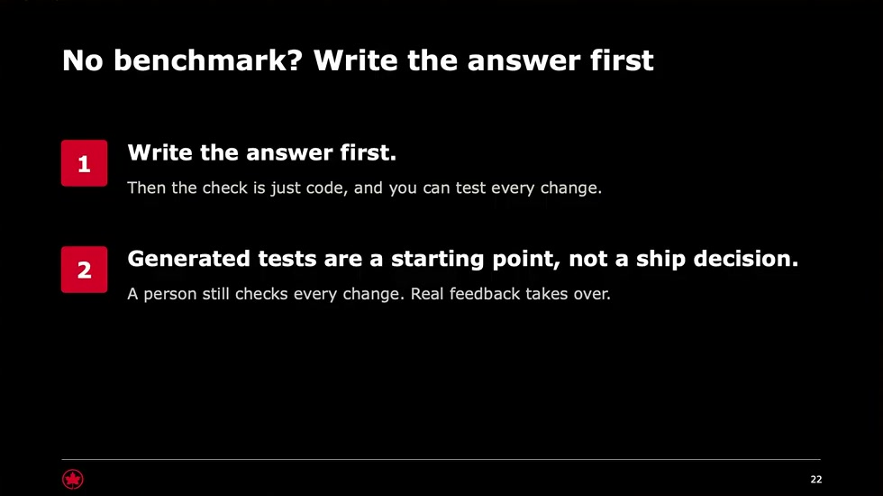

“The original design we could not evaluate it. We switched to something that we can actually evaluate because of that.”00:12:35
- An LLM judge added more noise than signal; code checks did not.
- Sometimes the solution was redesigned so it could be tested.
- Generated tests start the loop; real feedback improves the tests.
Evidence: transcript 00:12:35